SRP significa Sistema de Restauración de Particiones. Es un sistema con el cual podemos hacer una copia de las particiones del disco duro del equipo en el mismo disco duro, para poder restaurarlas en caso necesario.
Para saber más en el menú SRP de la barras de herramientas se accede a los distintos apartados. Los mas generales y que permiten hacerse una idea de las características, funcionamiento e instalación son:
Esta versión deriva de la versión generada para instalción en equipos con arranque Legacy y se adaptó para poder usarla tanto en los equipos antiguos con arranque Legacy como en los más modernos con arranque UEFI.
Recientemente se vió que la versión generada tras actualizaciones o instalación de nuevos programas en Windows al solicitar el rearranque , en ocasiones, se perdía la referencia a las distintas particiones de los sistemas operativos. Esto parece que se debe a que dejan de funcionar las referencias a las distintas particiones del disco del tipo hd[disco].[particion] (ejemplo hd1,1) que son las que se usaban en los scripts de los menús de Grub de SRP.
Para resolver este problema se ha actualizado la aplicación para que además de la referencia por disco y partición, añada una referencia por UUID (Universally Unique Identifier, Identificador Universal Único) de las distintas particiones de forma que si el primer procedimiento fallase el segundo se activaría y encontraría las particiones correspondientes,ya que se supone que le UUID es único para cada una de las particiones de un disco.
Tal como ha quedado la aplicación existe la opción de generar srp.zip sin estas referencias UUID (si con la versión previa funcionaba bien para que cambiar), o bien con ellas, pues si se accede a la página de para generar nuestro archivo con el sistema SRP (srp.zip) se verá que con respecto a versiones previas se ha añadido la casilla de check: 'Usar UUID'. Si se marca nos comprobará que cargamos un archivo con las UUIDs de las particiones de nuestro/s disco/s (particiones.txt). Si no se marca se generará sin esas referencias (y el posible inconveniente de fallos al rearrancar tras actualizaciones de windows). Al marcar la casilla nos proporciona la orden para generar particiones.txt ejecutando la orden en una consola linux.
El resto del uso es exactamente lo que se explicó cuando no se había añadido la posibilidad de refereciar las particiones por UUID, para ver lasa novedades que aporta esta nueva versión y como aplicarlas se puede ver el video:
Visto los inconvenientes de no usar las UUIDs se preguntará sobre la conveniencia de mantener la posibilidad de obtener srp.zip sin esas referencias. La razón es que aunque se tengan equipos con discos con las mismas características y el mismo particionado, las UUIDs de las particiones serán distintas ya que al generarse una partición se busca un número al azar y en general es muy poco probable que estos coincidan. Otra cosa es que si se clona un disco ya particionado sobre los otros discos, en este caso si que coincidirán los números de las particiones equivalentes en todos los equipos.
Es decir que en equipos iguales pero que se particionan independientemente el srp.zip con UUIDs de uno de los equipos no sería totalmente correcto en los otros ya que los UUIDs en las particiones equivalentes de unos y otros al haberse generado de forma independiente no serían las mismas. Si el srp.zip se obtuvo sin UUIDs sería, en cambio, válido para todos (pero con el inconveniente del posible fallo en los reinicios de windows).
Si todos los discos se obtuvieron por clonado de uno, el srp.zip obtenido con UUIDs obtenido de uno de ellos si que sería válido para todos.
No obstante como se habrá visto en el video anterior teniendo a mano el esquema de particionado del primer equipo en el archivo (configuración.txt), usando el botón 'cargar configuración.txt' y obteniendo el archivo (particiones.txt) en apenas unos segundos podemos obtener el srp.zip totalmente adaptado a las UUIDs de cada equipo.
En el vídeo siguiente se simula como obtener el srp.zip totalmente adaptado partiendo de uno que tuviera el esquema de particiones válido (realmente solo se necesita configuración.txt que viene en la carpeta herramientas del srp.zip):
Introducción
SRP significa Sistema de Restauración de
Particiones. Es un sistema con el cual podemos hacer una copia de las
particiones del disco duro del equipo en el mismo disco duro, para
poder restaurarlas en caso necesario.
Está basado en la distribución SystemRescueCD, GRUB como gestor de arranque y efibootmgr, herramienta popular para manipular los ajustes EFI a fin de crear y gestionar entradas de arranque capaces de arrancar Línux (o cualquier otro sistema operativo EFI). Básicamente consiste en realizar un particionado del disco/s del equipo, implantar un distribución de linux ligera, y consta de unos scripts para grub y la shell con los que se ha automatizado el proceso de crear copias de seguridad y restaurar las particiones de los sistemas operativos del equipo.
La utilidad de implantar este Sistema de Restauración de Particiones en un equipo, es que normalmente el tamaño del almacenamiento (disco/s duro/s) del equipo suele ser bastante mayor del necesario para contener el software del sistema operativo más las aplicaciones que se van a utilizar. Incluso cuando se plantee un arranque dual (Windows+ MAX, la distribución de linux de la comunidad de Madrid). El tamaño de los discos duros actualmente supera los 500GB, con lo que dejando 150GB para cada SO, todavía se dispone 200GB de espacio, que sería espacio más que suficiente para contener los archivos comprimidos de las imágenes de backup de las particiones de ambos sistemas operativos, en esos 200MB si creamos con ese espacio una partición de backup.
Además para gestionar el SRP se puede utilizar una distribución de linux ligera que contenga las herramientas apropiadas para administrar el equipo y que precise poco espacio. En este esquema como se ha dicho se ha elegido SystemRescueCD, que precisa en sus versiones actuales menos de 2GB del almacenamiento.
Aunque se puede usar para equipos personales, donde se puede obtener un mayor beneficio de este SRP es en las aulas de informática. Dichas aulas normalmente se componen de 15 a 30 equipos idénticos, que se usan por los distintos grupos de alumnos y profesores y que no están destinados a contener datos de usuario. Conviene en esos equipos del aula mantener homogeneidad en aplicaciones y entornos de los SO en todos los equipos. Dado la diversidad de usuarios que pasa por cada equipo, no es infrecuente que pese a los esfuerzos del administrador del aula, de forma accidental o intencionada, algunos usuarios alteren dicha homogeneidad en algún equipo, llegando en algunos extremos a inutilizar el equipo para poder ser usado de forma normal. Es una tarea frecuente de los administradores, restaurar ese equipo, normalmente partiendo de la maqueta adecuada de esos equipos. Está claro que esa tarea se facilita si la maqueta del propio equipo está albergada en una partición de dicho equipo inaccesible a los usuarios normales . Aquí entra el SRP, pues arrancando en uno de los modos para administradores, se puede arrancar el proceso de restauración del SO dañado y en apenas unos minutos se tendría restaurado dicho equipo. Es más, si hubiera que llevar a cabo dicho proceso en varios equipos del aula, el proceso se puede llevar a cabo en paralelo de forma que apenas duraría algún minuto más que hacerlo en un solo equipo.
Otro proceso en que disponer de SRP en los equipos del aula facilitaría el trabajo de los administradores del aula de informática, sería la tarea de actualizar los equipos al comienzo (o durante) del curso. Ese proceso se llevaría a cabo solamente en uno de los equipos asegurando que cada SO del equipo quede con todo su entorno actualizado y adecuado al uso que se presume tendrá a lo largo del curso. Una vez hecha la actualización del primer equipo (puede suponer un tiempo importante), el procedimiento eficaz (en lugar de pasar a hacer lo mismo en los deás equipos), sería hacer una copia de seguridad de las particiones afectadas con SRP, a continuación se hece llegar, a través de la red del aula (o dispositivos extraíbles), la copia al resto de los equipos (si es a través de la red se puede lanzar en paralelo en todos los equipos del aula), una vez un equipo ha recibido la imagen actualizada de las particiones, se lanza el proceso de restauración, y una vez completado se debe en cada SO del equipo corregir el nombre del equipo (ya que en las imágenes distribuida vendría el del equipo en el que se hizo la actualización), en este momentoys estaría actualizada el aula, no obstante para mantener actualizado el SRP en cada equipo se hace la copia de seguridad en cada equipo, para que quede la imagen de lo SO perfectamente adaptada incluido el nombre de equipo. Estos procesos se pueden lanzar en paralelo (o pipeline, se lanza un proceso largo en un equipo y a continuación mientras se lleva a cabo se inicia en el siguiente ... ) en todos los equipos del aula. De esta forma el proceso de actualización una vez realizado en el primero y obtenida la imagen llevaría: el tiempo de distribución de los archivos de la imagen (a considerar pues son archivos que suman varios GB)+tiempo de restauracion (a considerar en torno a 20') + tiempo de adaptar el tiempo de usuario (poco si se tienen preparados scripts que lo hagan) + tiempo de crear la copia de seguridad (a considerar en torno a 20'). Como todo eso se puede lanzar prácticamente en paralelo salvo la tarea de cambiar los nombres de equipos que habrá que ir de equipo en equipo y dependerá del numero de administradores presentes, pero al ser un proceso corto se puede hacer en los equipos que vayan acabando la restauración mientras los demás todavía no la han completado o están haciendo el siguiente procesos, es decir iría como un pipeline. Resumiendo con poco más de 1h se puede dejar toda el aula actualizada y además con la seguridad (al provenir de clonado del primer equipo actualizado) de que el software de todos los equipos es exactamente el mismo, incluso aunque solo haya habido una persona encargada de realizar dicho trabajo.
Describimos a continuación las opciones de cada menú de las pantallas de arranque que mostraría el SRP.
Menú principal
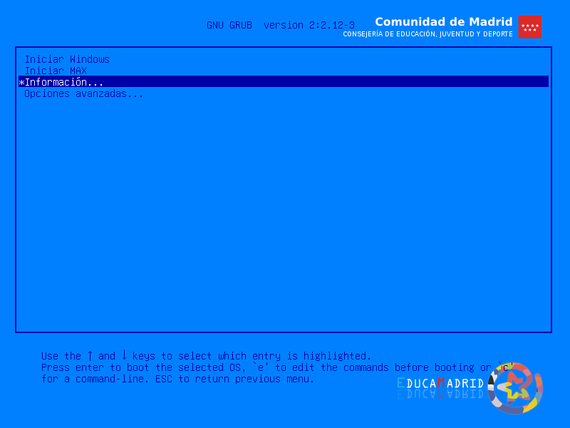
Este es el menú principal que aparece siempre al encender el equipo. Permite seleccionar el sistema operativo en el que deseamos iniciar. Por defecto tiene una cuenta atrás tras la cual inicia el sistema operativo que tengamos seleccionado. También como se ve también da acceso a información y a las "opciones avanzadas", en que se puede configurar tanto el tiempo de la cuenta atrás para el arranque con SO por defecto, así como el sistema operativo que queramos que inicie por defecto y también el acceso a las tareas de mantenimiento para restaurar y crear copias de seguridad de los dos SO que son las que justifican la utilidad de este SRP.
La opción "Información..." muestra una pantalla con información sobre la maqueta:
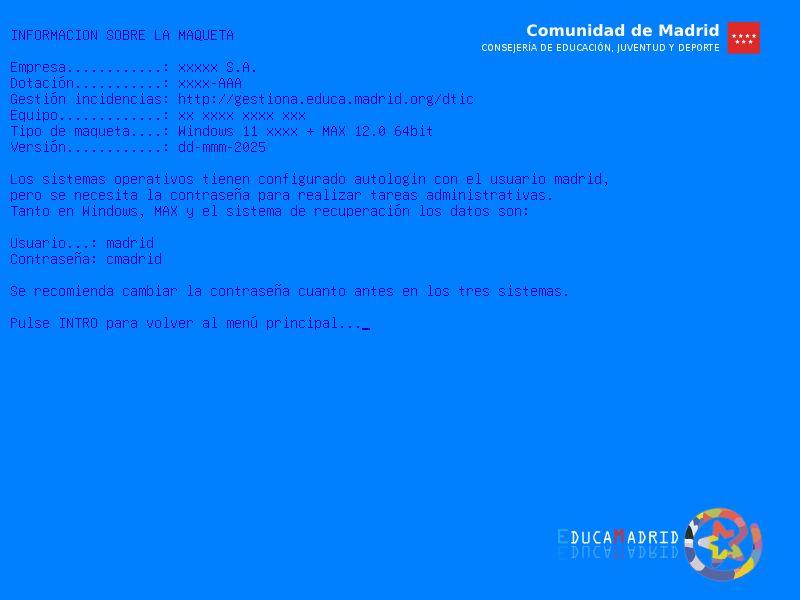
Menú de opciones avanzadas
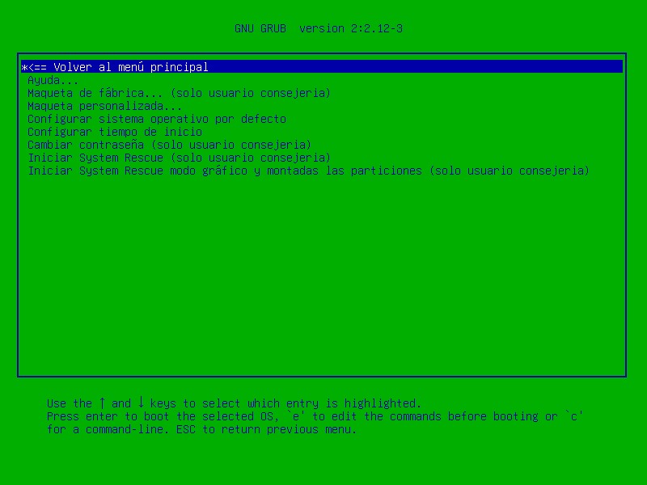
El acceso a este menú está bloqueado mediante usuario y contraseña. Los datos por defecto son para el usuario administrador normal "madrid" y contraseña "cmadrid" (como se dice en información conviene cambiar dicha contraseña), pero existe un superusuario con mayores permisos que por defecto se crearía con nombre de usuario "consejeria" y contraseña "cconsejeria", la contraseña en este superusuario se guarda encriptada. Se trata de que sólo el personal autorizado pueda realizar las labores de cambio de contraseña del usuario madrid, el SO de arranque por defecto, el tiempo de espera para arrancar el SO por defecto, restauración del equipo, creación de un backup del equipo o arrancar en la consola o entorno gráfico de SRP.
La contraseña del usuario "madrid" se puede cambiar en uno de los menús de SRP en cualquier momento, pero la contraseña del superusuario "consejeria" no es modificable desde los menús normales de SRP. No obstante cuando se realice la instalación de acuerdo con el procedimiento que se describe, ambas contraseñas se pueden crear con valores diferentes de los indicados por defecto.
- Ayuda...
La opción "Ayuda..." contiene una breve descripción de los componentes de este menú:
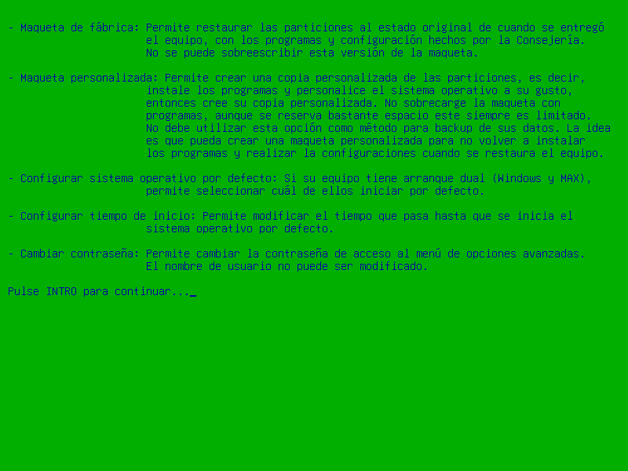
- Maqueta de fábrica
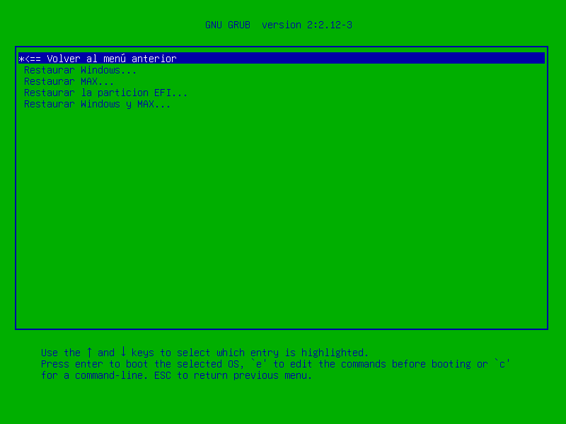
Desde este menú solo podemos restaurar la partición de Windows, la de MAX o ambas y la partición de arranque EFI. La maqueta de fábrica sólo tiene la opción de restaurar.
Para tener backups de esta maqueta se partiría de haber obtenido backups de la maqueta personalizada y accediendo con alguna de las opciones "Iniciar Systen Rescue ...", se procedería a renombrar (o copiar) la carpeta "copia2" de la partición SRPBACKUP a "copia1", o bien copiar los archivos imagen de uno de los SO de "copia2" a "copia1".
Esta maqueta de fábrica originalmente tenía como utilidad mantener el punto de partida de la maqueta con que la Consejería de Educación creaba los equipos, ya que venía creada cuando la Consejería de Educación hacía entrega de los equipos para el aula al centro educativo, y caso de que en el uso de la misma se hubieran producido alteraciones que el administrador del centro no pudiera resolver, sería personal de la consejería que se desplazara al centro, el que lo resolviera por el procedimiento estandar de restaurar la copia de fabrica usando el usuario "consejeria" (cuya contraseña solo conocía la Consejería de Educación) en pocos minutos volvería a dejar operativa el aula con el software con que la entregó.
En esta actualización de SRP ya no tendría sentido dejar a "consejeria" con ese rol, sino que se ha planteado como un superusuario que realice las tareas menos frecuentes y más comprometidas como realizar los backups, cambiar la contraseña de "madrid", acceder en modo consola o gráfico a SRP. De esa forma dejar para que haya administradores con menor rango que accederían con el usuario "madrid" para que realizarían tareas más frecuentes como la restauración de la maqueta personalizada (la más actualizada) en un equipo que lo precisara.
En la filosofía descrita en estas páginas, la maqueta de fabrica sería una maqueta personalizada que se ha visto que funciona de forma estable (esto solo se puede saber después de un tiempo de uso de los equipos), pasado ese tiempo, el superusuario consejería pasaría a considerar si conviene realizar el paso de convertirla en la nueva maqueta de fábrica. El procedimiento sería hacer una copia de los archivos de imagen de los SO de la carpeta "copia2" a la carpeta "copia1" eliminando esos los archivos viejos que hubiera en "copia1 . De esa manera se tendría como un punto de partida "de fabrica" la copia personalizada debidamente probada.
Las copias personalizadas, por la manera de generarlas, inicialmente no tienen ningun tiempo de uso y prodría ser que tras usarlas un tiempo pudieran manifestar problemas que no se pudieran resolver. En ese desafortunado caso se podría deshechar la copia personalizada y realizar la actualización desde un punto de partida más probado que sería la copia de fábrica.
Antes de restaurar una partición se avisa con un último menú para confirmar la acción:
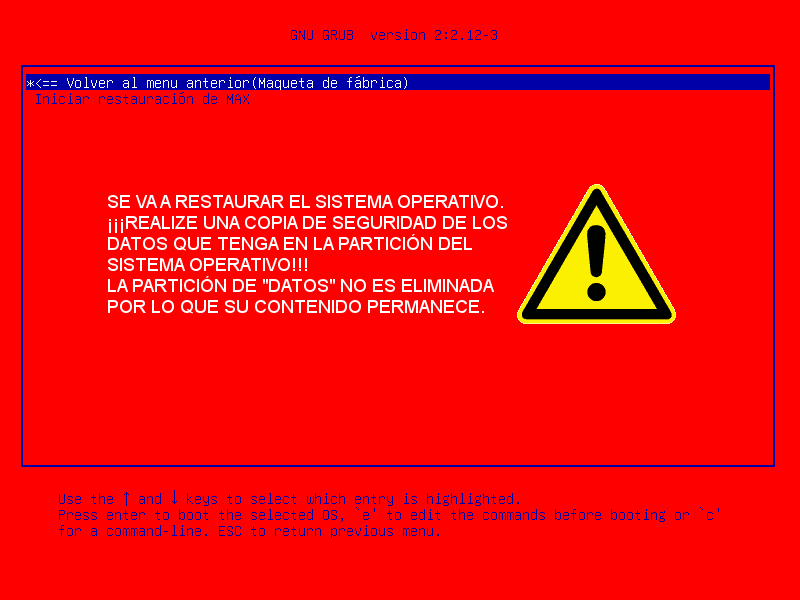
Al pulsar "Iniciar la restauración..." primero se carga el SystemRescue lo que lleva unos segundos, veremos los mensajes de carga en la pantalla:
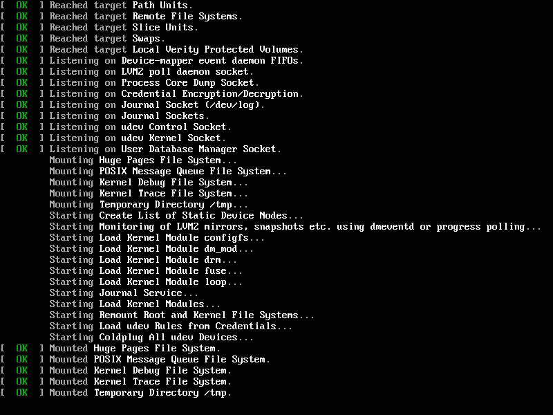
Al finalizar la carga se ejecuta el script correspondiente, en este caso restaurar la imagen. Al finalizar la tarea se muestra un mensaje de tarea terminada y a los 30 segundos el equipo es reiniciado.
- Maqueta personalizada
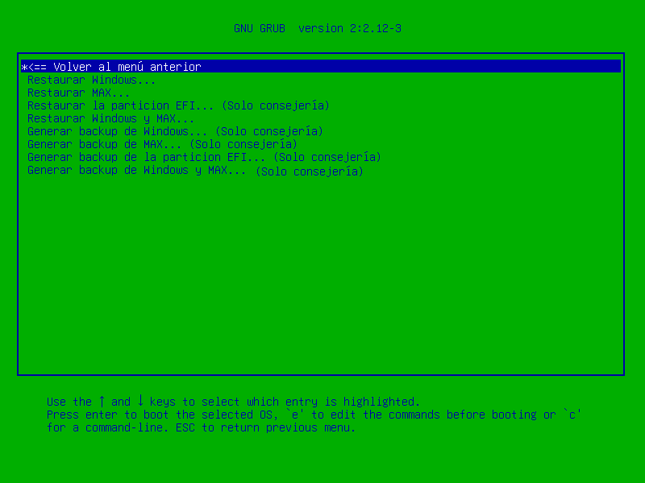
A diferencia de la maqueta de fábrica observamos que este menú sí nos permite generar los backups. Como se ve generar una copia personalizada se realiza mediante este menú, no obstante se ha dejado para el superusuario "consejeria", ya que se considera que establecer que estado de los SO es el conveniente, para que valga la pena conservarlo como imagen de respaldo incumbe al superadministrador, ya que cada vez que se genera un backup, los ficheros del backup anterior son eliminados.
El tamaño de la partición del SRPBACKUP se debe dimensionar para que quede bastante espacio libre para generar una copia personalizada incluso después de haber metido la copia de fábrica (suelen ocupar más de 15GB por cada SO, es decir 30 por copia al ser dos: fábrica y personalizda se pasaria de 60GB), pero aún así es recomendable estar pendiente de que la tarea termine con éxito y no ha falla por espacio insuficiente.
En ningún momento se debe pensar en este sistema como un sistema de backup para los datos de usuario. Por supuesto todo lo que se meta en las particiones de los sistemas operativos quedará grabado en estos backups, pero la idea es precisamente la contraria. Un backup del sistema operativo debe estar limpio de cualquier dato personal. Para realizar backups de datos personales se deben de utilizar otro tipo de herramientas para copiar exclusivamente lo que interesa.
De hecho sería recomendable dirigir las carpetas de usuarios a otras particiones tanto en windows como en MAX (montar home en otra partición)
- Configurar sistema operativo por defecto
Permite seleccionar qué sistema operativo queremos que se inicie después de que termine la cuenta atrás en el menú principal.
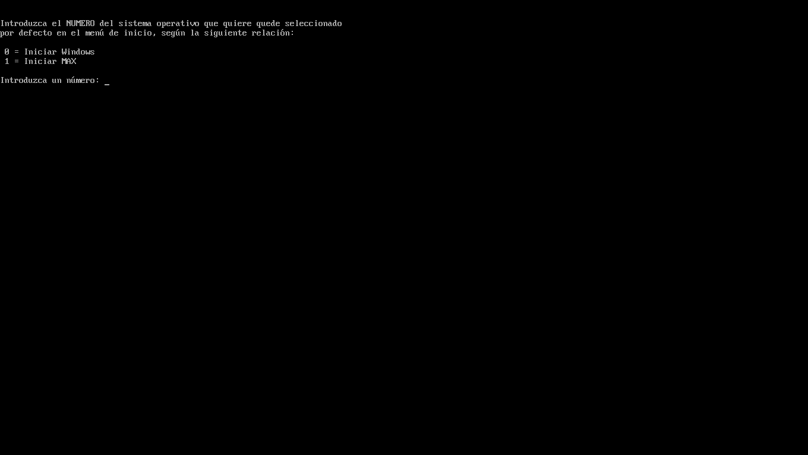
- Configurar tiempo de inicio
Permite configurar el número de segundos antes de que se inicie el sistema operativo por defecto:

- Cambiar contraseña:
Permite cambiar la contraseña del usuario "madrid". La contraseña por defecto es "cmadrid" pero esta contraseña debe considerarse como temporal, el usuario final debería cambiarla cuanto antes, esta opción solo se puede hacer entrando con el superusuario "consejeria" y solo se puede cambiar la del usuario "madrid".

- Iniciar System Rescue ...:
Esta dos opciones reservadas al superusuario "consejeria" (una con la consola de texto y la otra en modo gráfico con todas las particiones montadas en "/mnt" lo que nos facilitaría realizar las tareas que el "superusuario" se planteara al entrar.
Es necesaria para establecer la copia de fábrica a partir de backups de la copia personalizada, ya que no se estableció la opción dentro de un menú.
Está claro que esta opción es tan potente que permite hacer prácticamente cualquier cosa alterando los menús de la carpeta SRPBACKUP/srp/menus entre las que estarían por no ser demasiado complejas:
- cambiar la contraseña encriptada del superusuario "consejeria", se puede dejar encriptada o incluso ponerla en plano como la de "madrid". (la de "madrid también se pueda cambiar aquí pero sería más fácil hacerlo en su menú correspondiente)
- cambiar el nombre del superusuario "consejería", (no así el nombre del usuario "madrid" que requiere cambios en más archivos para que funcione de forma correcta).
Para realizar estos cambios habría que editar con cuidado el archivo menuprincipal.cfg de la carpeta SRPBACKUP/srp/menus de acuerdo con el apartado "Avanzado".
Cualquier cambio que se haga si no es de forma cuidadosa al hacerse en archivos ejecutables de grub puede llevar a que el sistema deje de funcionar.
Si se precisase editar archivos de la carpeta /mnt/SRP/autorun, se puede llevar a cabo también desde esta opción ya que el arranque se hace copiando los archivos de SystemRescueCD en la memoria de forma que queda escribible la particion SRP (opción copytoram), para el resto de los arranques: crear backups, restaurar etc, no se usa esta opción ya que ocupa parte de la RAM y se ejecuta más lentamente, lo que ha obligado a dividir la particion SRP del modelo original en dos SRP (no escribible) y SRPBACKUP (escribible) .
Instalación del SRP
Introducción
Lista de videos en que se implementa la instalación de este sistema en un equipo con un disco con windows11 instalado.
Este documento explica como instalar el Sistema de Restauración de Particiones (SRP) en un equipo con arranque UEFI, aunque tambien esta adaptado para poder instalarlo en equipos antiguos con arranque LEGACY en sustitución de la versión anterior que se puede obtener de la página Roberto Mengíbar. En esta versión antigua de la págna de Roberto habría que disponer de versiones antiguas de System Rescue CD anteriores a la 5 que ya no estan disponibles en la página de descarga.
Los scripts del SRP se han diseñado a partir del los scripts, que la Comunidad de Madrid diseñó para una distribución de particiones muy concreta que se utilizó en la elaboración de algunas de las maquetas de la Comunidad de Madrid. Estos equipos llevan arranque dual lo que permite iniciarlos en Windows o MAX (la distribución linux de la Comunidad de Madrid).
El SRP de partida que se obtuvo de la página de Roberto Mengíbar estaba configurado por defecto para trabajar con una distribución de particiones muy concreta. Si la distribución de particiones que resultase en el equipo fuese diferente era necesario modificar los menús de Grub (en carpeta de srp menús ) o adaptar algún script (en carpeta autorun) o ambas cosas.
Viendo la forma de adaptar al arranque UEFI con las nuevas versiones de System Rescue CD (a partir de la 9.06), para la versión de windows actual (11) y para tabla de particiones de disco GPT. Se encuentra que se va a precisar de un sistema diferente, más flexible y que nos evite tener que hacer cambios en los menús y/o scripts en muchas de las configuraciones. Alterar los menus de grub o los scripts de consola de linux tiene dificultad y riesgo de cometer errores por la complejidad de dichos lenguajes, y aun teniendo conocimientos las consecuencias de un error es que el sistema quede sin posibilidad de arrancar por si mismo.
Estos condicionamientes se hacen que un archivo fijo de configuración similar al de la página de Roberto no sea práctico se pueden resumir en:
- En arranque UEFI se precisa de una partición del disco sda para gestionar el arranque, la partición EFI que no se contemplaba en la versión de Roberto y ademas no siempre es sda1.
- En GPT se pueden crear más de 4 particiones primarias, por lo que no es necesario manejar particiones extendidas.
- Es posible que en algunas aulas se disponga de equipos con más de dos discos duros, uno más rápido que será el primario y otro secundario. En ese caso lo conveniente es reservar el primero para los sistemas operativos windows, MAX y SRP; y el secundario lo reservaríamos para los datos de usuario y la partición con las copias de seguridad (SRPBACKUP).
- Las versiones de System Rescue CD a partir de la 9.06 montan de solo lectura la partición en la que se hace la copia de los archivos de CD (o de la usb arrancable), por lo que el sistema original no funcionaría ya que precisa copiar las copias de seguridad y modificar algunos menús y scripts. Es por eso que en lugar de una sola partición se ha optado por utilizar dos: una que contenga las copia de los archivos de System Rescue CD y los scripts de autorun, que no se modifica nunca y con 2GB es suficiente en este momento; y otra que contenga los archivos de arranque de grub, los menús de grub y que deberá tener el tamaño suficiente para que quepan también las copias de seguridad que generemos. en la situación actual es posible que se precisen entre 100 y 200 GB.
- Windows 11 genera un numero de particiones del sistema diferente al versiones anteriores. Genera una pequeña partición de sistema de archivos desconocido para Gparted con etiqueta "Microsoft reserved partition" (sde3 de 128MB y sdf2 de 16MB en las imágenes que siguen), que no es necesario gestionar en las copias de seguridad. Admás genera otras que sí que debemos contemplar para las copias de seguridad que son la que corresponde al disco C: de windows que tiene un gran tamaño (sde4 y sdf3) y una o dos particiones de recuperación (dos: sde1 y sde5; y una: en sdf4 en la imagen que sigue). Es decir que el numero de particiones de windows que debemos contenplar no es siempre 2 como en el modelo de Roberto, sino que de forma aleatoria nos encontraremos con 3 o 2 (como en las imágenes). Además los números que les asign pueden veariar, y también el número asignado la partición EFI sistema de archivos fat32 puede no ser siempre la misma (sde2 y sdf1 en las imágenes).
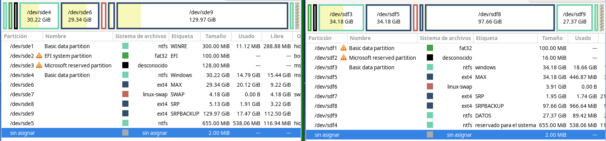
(en la imagen se han conectado ambos discos a un equipo con varios por eso la letra de disco es 'e' y 'f', en un situación normal el equipo tendría normalmente un solo disco y sería ambas situaciones 'sda')
Por todo lo expresado anteriormente no se ha considerado práctico crear un archivo zip con el contenido de los archivos de configuración de menús y script fijo del estilo del srp.zip que se puede descargar de la página de Roberto, sino que se ha considerado más práctico crear una página web con un entorno gráfico que, de acuerdo a la configuración de particiones del disco de nuestro equipo, haga la selección de las opciones correspondiente en dicha página y una vez completada y comprobada la configuración, pulsando en descargar el archivo se obtenga el srp.zip ajustado a la configuración de particionse de nuestro disco/s.
Teniendo en cuenta que las versiones modernas de System Rescue CD no son compatibles con el esquema de menús y particiones que configura la página de Roberto Mengíbar, dado que el esquema propuesto es lo suficiente flexible, permite configura para que también nos genere el SRP para equipos antiguos que solo tengan arranque LEGACY que funcionarian con versione modernas de System Rescue CD. Para estos equipos basta con desmarcar la casilla de la partición EFI en la aplicación que se propone a continuación y configurar el resto con las particiones del disco del equipo.
La página para configurar nuestro esquema de particiones y obtener un srp.zip personalizado es:
Procedimiento
PRECAUCIÓN
Estos procesos llevan a cabo modificaciones en las particiones de los discos del equipo que pueden ocasionar la perdida irreversible de información. Es por tanto muy recomendable tener copias de seguridad de dicha información, lo más práctico para ello es realizar un clonado del disco con la instalación de windows para lo cual una herramienta libre muy recomendable es clonezilla.
Windows 11 encripta sus particiones utilizando bitlocker, es necesario para poder instalar el sistema SRP desactivar bitlocker y conviene realizar el clonado después de desactivar bitlocker. (Si se intenta antes de desactivar bitlocker es posible que falle clonezilla o se precise de un espacio de almacenamiento mucho mayor)
Es muy recomendable simular el proceso antes de llevarlo a cabo sobre el equipo físico de forma que tengamos probados los pasos a dar previamente. Para poder simular el proceso se puede utilizar un sistema de virtualizacion. Uno gratuito que se ha utilizado pare adaptar el SRP y que se recomienda es Oracle VirtualBox. Para partir de un disco con una maquina virtual que contenga windows11 se puede obtener el software necesario de la página oficial de Microsoft.
PASO 1:
Obtener el iso de sofware System Rescue CD en versiones más recientes que la 9.06 y generar un DVD o bien un usb arrancable para lo cual se pueden utilizar diversas herramientas: Rufus, Balenaetcher, Ventoy etc.
PASO 2:
Desactivar bitlocker en el windows del equipo en que vamos a implantar el SRP y desactivar secure boot.
PASO 3:
Arrancar con el DVD o usb arrancable de System Rescue, para lo cual en el encendido del equipo es muy posible que tengamos que entrar en la bios para alterar el orden del dispositivo de arranque o bien indicar directamente dicho dispositivo, para lo cual al encender el equipo antes de que comience a arrancar windows, se debe pulsar repetidamente una tecla normalmente (escape, supr, f2 o f12 ...). La tecla a usar dependerá de la bios de equipo.
Al iniciar el arranque con Sytem Rescue aparece un menú con varias opciones, la primera se seleccionada por defecto nos sirve, por lo que pusamos intro y comienza el arranque.
System Rescue es un sistema basado en linux y arranca en modo texto, cuando se completa el arranque nos muestra una consola con cierta información de interés y un prompt para que tecleemos las órdenes precisemos. con el aspecto que sigue:

Es conveniente que pongamos el teclado español con la órden: setkmap es, para tener el teclado español, y a continuación arranquemos una sesión gráfica con la orden: startx el aspecto del entorno gráfico es:
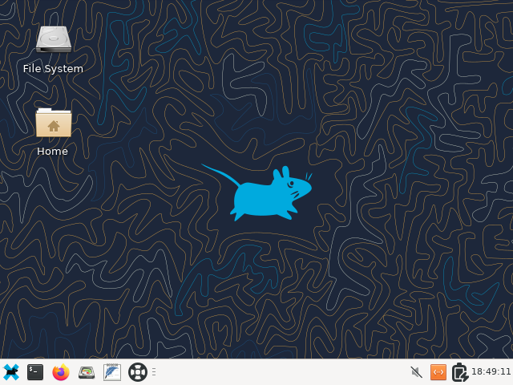
En la barra de abajo vemos el botón de inicio que nos da acceso a todo incluido el apagado del ordenador y a continuación tenemos los iconos que arrancan: una terminal de texto, Mozilla Firefox, Gparted, y un editor de texto.
Para los pasos siguientes vamos a utilizar gparted y Firefox.
PASO 4:
Abrimos gparted y modificamos las particiones del disco con windows 11 una posible situación de partida sería:
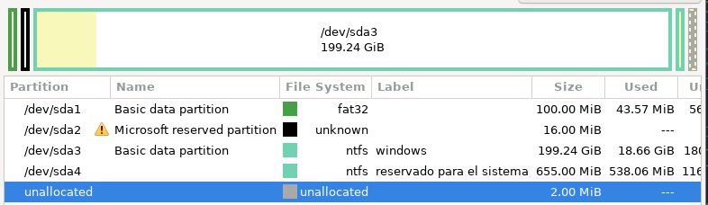
Vemos que windows tiene dos particiones que debamos considerar, las dos con file system: NTFS que son sda3 que es de gran tamaño y correspondería con el disco C: de windows y la pequeña "reservado para el sistema" sda4.
Es de la grande sda3 de la que debemos sacar espacio para: la partición de MAX, la swap (si queremos usarla), SRP y SRPBACKUP.
Para sacar el espacio necesario, se selecciona sda3 y en el menú particion seleccionamos "resize/move" y reducimos por su final (los datos de windows estan al principio y aparecen sombreados) hasta que dejando suficiente espacio para windows nos genere un espacio libre suficiente para las particiones: MAX, swap (es opcional), SRP (con 2GB es suficiente), SRPBACKUP:
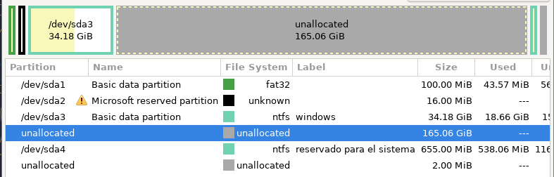
Para crear en el espacio libre creado "unalocated", se pincha en dicho espacio y en el menú partición se selecciona: "New", se despliega un menú que nos permite seleccionar: tamaño, filesystem, y label. para MAX, SRP y SRPBACKUP. Serían el tamaños adecuado a cada una: MAX por encima de 20GB, SRP 2GB y SRPBACUP entre 100 y 200 GB. Las label que hemos indicado y filesystem de las tres ext4. opcionalmente se puede crear una particion swap filesystem linux-swap y tamaño en funcion de la memoria de nuestro equipo (puede ser en torno a 4GB). Una posible solución sería:
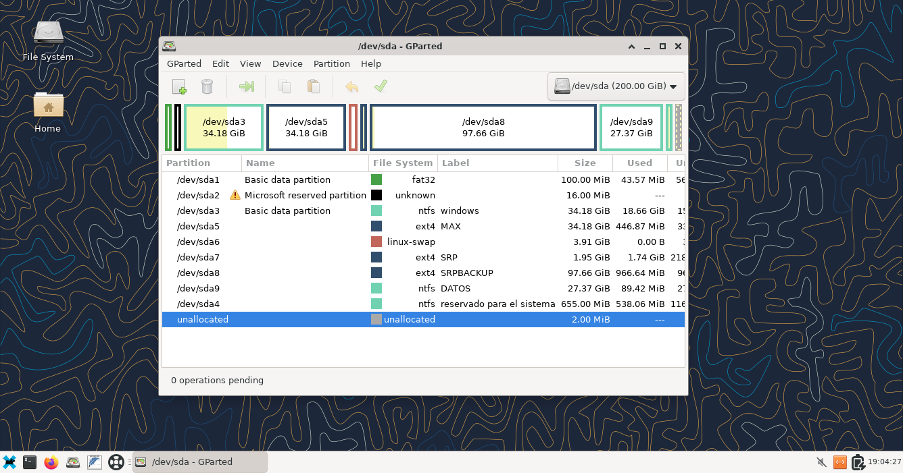
En que se puede ver que las particiones creadas han sido:
sda5 MAX con filesystem: ext4; sda6 (aprox. 4GB) filesystem: linux-swap ; sda7 SRP (aprox 2GB) filesystem ext4; sda8 SRPBACKUP filesystem: ext4; y aunque no se gestionará con el sistema SRP pues sería para datos de usuario, se ha creado una particion para DATOS en sda9 con filesystem ntfs que equivaldría al disco D: de windows.
Una vez creadas las nuevas particiones que precisemos con sus tamaños adecuados, pasamos a confirmar que gparted guarde los cambios pulsando en el símbolo verde de OK de los menús ( √ ), con lo que se realizarán los cambios en el disco (si no se pulsa y salimos de gparted nos avisará de que hay cambios por realizar, si confirmamos la salida no se realizaría ningún cambio en el disco).
PASO 5:
Una vez tenemos particionado el disco como hemos indicado (o como conviniera a nuestro caso) pasamos a generar el srp.zip adecuado a nuestro particionado del disco, para lo cual, dentro del entorno gráfico abrimos, Mozilla Firefox y accedemos a la página:
Aparece un entorno que nos permite configurar el entorno SRP para nuestras necesidades de número de discos y las particiones concretas, así como las contraseñas iniciales de los dos usuarios que permite gestionar las opciones avanzadas de los menús, para el esquema que hemos generado con gparted seria:
Número de discos 1 y en la pestaña EFI se seleccionaría sda1 como para la particion efi filesystem fat32 que quedó con gparted, (en un disco con arranque Legacy no exite EFI y para indicarlo desmarcariamos la casilla de chequeo, al estar desmarcada no se tiene en cuenta el disco y particion de sus desplegables), en nuestro caso sería sda1 :
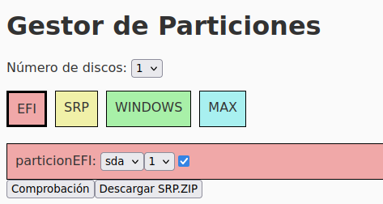
Para la pestaña SRP, dejariamos sda7 para SRP y sda8 para SRPBACKUP como quedo con gparted también se configurarían las contrseñas de los usuarios "madrid y consejería", si no se cambian quedarían las de por defcto "cmadrid y cconsejeria" respectivamente:
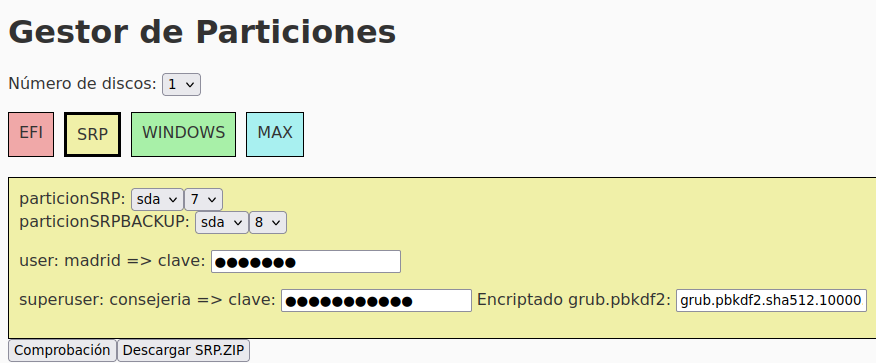
En la pestaña WINDOWS pondríamos para la particionWIN (la grande que equvale al disco C:) sda3 y para particionRES sda4 (particionRES2 en este caso no se usa ya que solo salieron dos particiones a tratar en el disco original de windows, por eso no la marcamos y da igual el valor del desplegable sda4 que muestra ya que no se usa al desmarcar la casilla de chequeo).
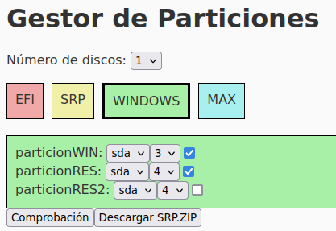
En la pestaña MAX se selecciona sda5 para MAX y sda6 para SWAP (esta puede no usarse si no se crea la particion swap, bastaría con desmarcar la casilla).
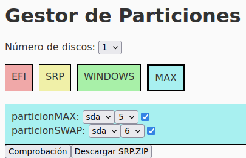
Como ya tenemos configuradas las pestañas con los valores que dejamos en gparted, pulsamos en el botón 'comprobación' para ver que no tengamos ningún error en alguna de las pestañas y si sale correcta la configuración pulsando en el botón 'Descargar SRP.ZIP' se descagará el archivo srp.zip, adaptado a nuestra configuración, que nos permitirá instalar SRP en nuestro equipo.
PASO 6:
Desde Mozilla Firefox podemos acceder al fichero srp.zip que se habrá descargado en "/root/Downloads", hacemos dblclick en el archivo y se abrirá una ventana en en descompresor, seleccionamos en el icono para extraer (en la ventana o menú "Action/Estract") y en la ventana que se abre navegar en "Estract to:" se despliega otra ventana en que pulsamos el icono "Desktop" (/root/Desktop) y a continuacion el boton "open", "/root/Desktop" aparecerá en en "Estract to:" y al extraer aparcera la carpeta srp carpeta en el escritorio.
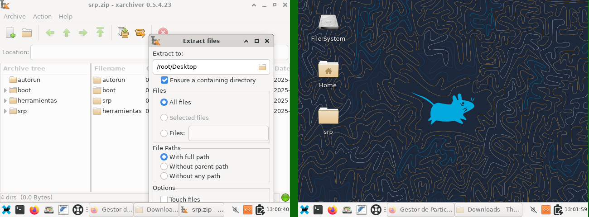
Dentro de srp del escritorio tenemos cuatro carpetas: 'autorun', 'boot', 'herramientas' y 'srp'. Para realizar las tareas que nos faltan lo más conveniente es abrir la carpeta 'herramientas' y en el caso de tener arranque UEFI, (en Legacy solo serán tres y cambiará algún nombre y función) apareceran cuatro archivos: configuracion.txt, creaEntradaGrubEFI.sh, MontaEFI_SRPBACKUP_SRP.sh y PonerPrimeraLaEntradaSRPenEFI.sh los tres ulltimos son archivos con ordenes para consola de linux.
Son archivos de texto con las ordenes agrupadas en formato bash, es decir si los abrimos con el editor de testos podemos ver las ordenes individuales y entender el funcionamiento .
- configuracion.txt contiene la configuración con que hemos creado srp.zip comoviene que lo guardemos en alguno sitio, ya que las particiones se podrían volvera consultar con gparted pero tambien guarda las contraseñas que hemos puesto para madrid y consejería conveniente por tanto para recordarlas si no hemos dejad las que pone por defecto.
- MontaEFI_SRPBACKUP_SRP.sh, como su nombre indica nos monta las particiones de EFI(sda1), SRPBACKUP(sda8) y SRP(sda7) en las carpetas /mnt/EFI, /mnt/SRPBACKUP y /mnt/SRP respectivamente, si tras ejecutarla navegamos a esas carptas veremos que /mnt/SRPBACKUP y /mnt/SRP estarán vacías en cambio /mnt/EFI contedrá algunos archivos y carpetas ya que tendrá configurado el arranque de windows.
- creaEntradaGrubEFI.sh, se encarga de añadir en EFI los archivos y carpetas necesarios para que arranque el sistema SRP, en la carpeta /mnt/EFI/EFI aparecerá además de la entrada "Microsoft" que ya estaba una entrada "SRP" que es la que habilita este arranque, también creará en el firmware de arranque EFI del ordenador una entrada para SRP que se puede comprobar al escribir en una terminal la orden "efibootmgr", y en SRPBACKUP, antes vacía, la carpeta "boot" y su contenido.
- PonerPrimeraLaEntradaSRPenEFI.sh se encarga de colocar como primera entrada SRP en el menú de arranque UEFI, si no estuviera la primera en el orden por defecto arrancaría con otra entrada y no es lo que queremos, comprobar si el la primera opción se puede hacer con la orden "efibootmgr", en la salida, dentro del apartado bootorder, aparece una lista de numeros separados por comas, hay que ver que el primer numero corresponde con la entrada cuya etiqueta sea SRP en el resto de la salida que coomienzan por los numeros. Si no estuviera la primera ejecutando este archivo se pondria en primer lugar.
Para poder ejecutar estos archivos se deben poner como ejecutables para lo cua,l si hacemos click con el boton derecho sobre el archivo se despiega un menú que en la opción "Properties..." despliega una ventana que en la pestaña: "Permissions" permite chekar "Allow this file to run as a program":
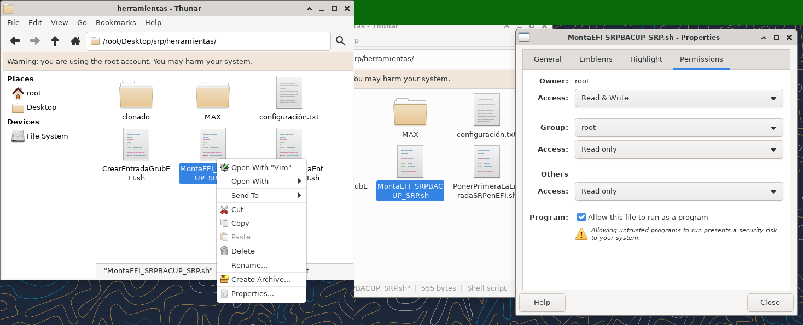
Una vez puestos como ejecutables los tres archivos "...sh", podremos ejecutarlos abriendo un terminal en la carpeta herramientas, pulsando el boton derecho en un espacio vacío de dicha carpeta y seleccionando "Open terminal here", se abrira una terminal en esta carpeta que si en la terminal ejecuamos el comando 'ls' nos listará los archivos y carpetas que contiene, veremos que los archivos que no checamos como ejecutables aparecen en blanco en el listado y los que sí aparecerán en verde (los directorios aparecen en azul):
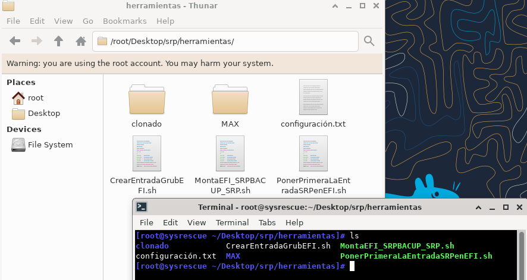
Queda pues ejecutar los archivos .sh para lo cual en el prompt # se escribe ./<nombre>.sh, donde <nombre> es el nombre del archivo correspondiente con (./ indicamos que el archivo en cuestion está en este directorio). El orden en que debemos ejecutarlos es:
- # ./MontaEFI_SRPBACKUP_SRP.sh que monta las particiones en /mnt/ de forma que sean accesibles al siguiente comando.
- # ./ creaEntradaGrubEFI.sh para que instale SRP como opción de arranque creando los archivos necesarios en las particiones EFI y SRPBACKUP
- # ./PonerPrimeraLaEntradaSRPenEFI.sh que coloca la entrada SRP como primera opcion en el arranque UEFI.
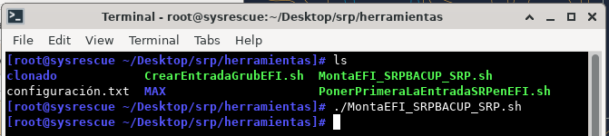
Queda solo copiar el contenido del DVD o usb arrancable de System Rescue CD a la partición montada en /mnt/SRP y pasar los menus, scripts y configuración de arranque que están en las carpetas que obtuvimos al descomprimir a las carpetas que indicaremos.
Comenzamos por la copia de los archivos de System Rescue CD: lo primero es que necesitamos es saber en qué disco y partición se ha asignado al DVD o usb para lo que ejecutaremos el comando: blkid , que nos listará todas las particiones de discos, CD, DVD o usb conectadas, sabremos cual corresponde al DVD o usb por que las que ya sabemos van des sda1 a sda9 que configuramos con gparted, el usb es probable que fuese sdb1, en nuestro caso es con DVD que aparece como sr0:
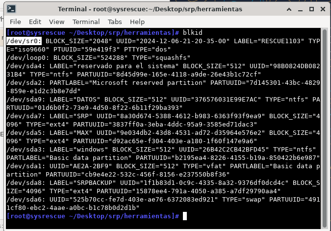
Una vez tenemos ese dato procedemos a crear una carpeta con el cualquier nombre por ejemplo "cd" dentro de la carpeta /mnt/ y procedemos a montarla en la consola tecleando el comando: mount /dev/sr0 /mnt/cd
En ese momento la carpeta /mnt/cd contiene los archivos del DVD, entramos en ella seleccionamos todas sus carpetas y las llevamos a la carpeta /mnt/SRP con lo que se copiara el contenido completo del CD a dicha partición.
En /mnt/SRP tendremos ahora, entre otras, la carpeta autorun pero estará vacía, la llenaremos llevando a /mnt/SRP la carpeta autorun que tenemos dentro de la carpeta srp del escritorio (obtenida al descoprimir srp.zip).
De la misma forma copiamos a /mnt/SRPBACKUP las carpetas que hay dentro de la carpeta srp del escrtorio a saber: srp, boot, herramientas y autorun. (realmente solo sería extrictamente necesario copiar srp y boot pero hemos visto que contiene scripts que pueden se necesarios en otras ocasiones y autorun sería una copia de seguridad de la copia que hicimos en SRP, ya que al apagar todo lo que tenemos en escritorio o en mnt se desmonta y desaparece y solo quedaría permanente lo que hemos colocado en SRPBACKUP)(el contenido de boot se añadiría a lo que creó en su momento el script que crea la entrada SRP en EFI).
Esto último ya completa la instalación. Reiniciamos el sistema y entraremos en los menus que nos permite arrancar cualquiera de los dos SO que tenemos instalados en arranque dual y entrar en las opciones de administración.
Como ya se comentó los menus y acciones de este SRP se configuran mediante un conjuto de scripts para grub y un conjunto de scripts bash que se guardan en la carpetas:
- autorun
- srp/menus
que se obtiene al descomprimir el srp.zip obtenido con nuestra configuración.
Los fondos de pantalla que se muestran en los distintos menús consisten en imágenes png, se encuentra en la carpeta del antedicho srp.zip:
- srp/fondos
En cuanto a los menús de grub, el archivo en el que si hacemos una edición cuidadosa va a permitir facilmente cambiar algún parámetro no contemplado (y otros contemplados) en los distintos menús es:
- menuprincipal.cfg
editando con un editor de texto dicho archivo podemos cambiar de forma fácil:
- nombre de usuario y contraseña del usuario madrid;
- nombre de usuario y contraseña del usuario consejeria;
- la información que se muestra en la opción "Información ..." del menú de entrada.
En el video que sigue se muestran de forma práctica varias de estas tareas, que se describen a continuación.
1) Cambio de usuario y contraseña del usuario "madrid":
Es importante recordar que tanto para el nombre de usuario y la contraseña solo se deben usar letras corrientes y números no sirven caracteres especiales, espacios, signos de puntuación, letras acentuadas, la ñ etc.
La linea 39 del archivo 'menuprincipal.cfg' contiene el texto literal de la linea siguiente:
password madrid cmadrid
si por ejemplo queremos que el usuario 'madrid' pase a llamarse gestor y la contraseña 'cmadrid' pase a ser 'mipass', esa linea quedaría escrita así:
password gestor mipass
En la línea 81, al final del archivo que figuraría de esta forma:
menuentry "Opciones avanzadas..." --users "madrid" {
Dado que 'madrid' ha pasado a ser gestor, deberíamos cambiarla de la forma siguiente:
menuentry "Opciones avanzadas..." --users "gestor" {
De esta forma habríamos completado los cambios necesarios, esto se podría haber hecho al implantar SRP incluyendo el archivo modificado o bien a posteriori entrando con la opcion avanzada de arrancar con System Rescue CD.
2) Cambio de usuario y contraseña del usuario "consejeria":
Es importante recordar que tanto para el nombre de usuario y la contraseña solo se deben usar letras corrientes y números no sirven caracteres especiales, espacios, signos de puntuación, letras acentuadas, la ñ etc.
La linea 37 del archivo 'menuprincipal.cfg' contiene el texto literal de la linea siguiente:
set superusers="consejeria"
Suponiendo que el nuevo nombre de superusuario va a ser 'admin' y contraseña: 'passadmin', deberia quedar:
set superusers="admin"
la línea siguiente (38) declara el usuario consejería y la contraseña encriptada en formato grub.pbkdf2 se debe poner en este formato, par lo cual podemos utilizar la pestaña de configuración de SRP de la página: https://jgilpalacios.neocities.org/SRP/ , en entrada de texto "superuser: consejeria => clave:", tecleamos la nueva clave (si se pone el raton sobre la entrada de texto se mostrara la clave que estamos configurando), una vez esté tecleada de forma correcta debemos hacer click con el ratón fuera del cuadro de texto y veremos que desaparece el cuadro de texto: "Encriptado grub.pbkdf2: " en cuanto vuelva a aparecer en el cuadro de texto está contenida la contraseña encriptada (como es mucho más larga que el tamaño del cuadro solo se muestra su inicio), haciendo doble click en el cuadro de texto se copia al portapapeles la nueva contraseña encriptada.
La linea 38 (aunque no lo parezca) es una sola linea de texto pero según el editor que se use es posible que aparente ser más de una, pues al ser tan larga la contraseña encriptada, es posible que la corte y la muestre ocupando varias lineas, como ocurre aquí. Es decir despues de 'consejeria' solo hay un espacio en blanco no un salto de línea:
password_pbkdf2 consejeria grub.pbkdf2.sha512.10000.02984CBDC50A106BA8190753956CF3223FC4DA7F9DFD0A96E70EDAE1B8ED2C49BC6417A4D68CC328F025B6F702B6F5F5B405D384FF1930CAF43E04AD8EF4FDB8.F3F7DF836EF18CF5CE70A5123A0B242F68C88B0FC215915DD1C23E2E08A78900CA5CA11E8033FE1C8179E620FBBA517F0348D4C2A4448B9335B1FC603256FF1A
en nuestro caso con los cambios propuestos en nombre de usuario: 'admin' y contrasña: 'passadmin' esa línea se convertiría en:
password_pbkdf2 admin grub.pbkdf2.sha512.10000.F5A240FD34E6383844813B2EC7DDB4270C065ACD29CDD78708E091BC89EF0574C33B6490D06C156DAE60B1DE9D884F9D2377AF279E8D188F8CBBAC792DD4822B.96E2C1FC8C048924DCFB8CF80C6A5290383034EAEAE6F9C12E42EAA5EBC351E7FA175CD557B4AF0CDA44EE72BC1C3B05DBADDB31B5BF3DD27199102C899C3294
Si no se quiere utilizar la página de configuración para obtener la contraseña encriptada, también se puede hacer en una consola de linux tecleando la orden: 'grub-mkpasswd-pbkdf2'. Nos pedirá que tecleemos la nueva contraseña dos veces y generará su formato encriptado, selecionamos el texto correspondiente, lo copiamos y lo pegamos a continuación de 'admin', dejando solo un espacio de separación.
3)La información que se muestra en la opción "Información ..." del menú de entrada.
En el menú principal tenemos la opción de "Información..." la cual muestra una pantalla con información relativa a la maqueta realizada. Viene rellena con una información de ejemplo que nos interesará modificar.
Abriendo menuprincipal.cfg con un editor de texto podemos modificar, eliminar o añadir más líneas de tipo "echo" pero en cualquier caso hay que tener cuidado de no modificar el resto de líneas del fichero que son significativas para mostrar el menú principal.
Modificación de fondos de pantalla
Otra modificación posible es la de los fondos de los menús que se encuentran en fomato de imágen png en la carpeta srp/fondos del srp.zip obtenido.
En esa carpeta encontraremos varios ficheros gráficos en formato "png" los cuales podemos sustituir por los que nos interese. La resolución de los ficheros es de 800x600 píxeles que es la resolución gráfica a la que se configura el Grub. Por defecto se encuentran los siguientes fondos:
- fondo.png
- fondo2.png
- fondo3.png
- fondogene.png
- fondorest.png
basta con respetar los nombres el formato de la imagen y la resolución para pesonalizar los menús con nuestras imágenes.
Modificar los permisos de las distintas opciones que se van desplegando
Ya se ha dicho que el acceso a opciones avanzadas se reserva tanto al usuario 'madrid' como al superusuario 'consejeria', de estos dos usuarios, solo 'consejería' se pone como 'superusers' (en linea 36) y además la variable 'superusers', se pone como global (en linea 37), esta configuración, como se ha dicho se encuentra en las líneas 36 y 37 de menuprincipal.cfg;
set superusers="consejeria"
export
superusers
Si se cambia la línea 36 a:
set superusers="consejeria madrid"
Tanto 'madrid' como 'consejeria' serian super usuarios y podrían acceder a todos los menús, con lo que se podría perder la granularidad de dejar separar en los dos niveles de responsabilidad las distintas tareas.
No obstante es posible que queriendo mantener esos dos niveles de responsabilidad, no se esté de acuerdo con lo que se restringe al usuario 'madrid' y si se le quiere dar acceso a alguna de las opciones que por defecto se reserva al usuario 'consejeria'. Es factible hacer esto y a continuación se explica.
Realmente el usuario 'madrid', dado que no se exporta solo funciona en el el archivo de grub en que se define y por tanto en el resto de archivos de menús que se manejan desde menuavanzado.cfg (al que solo se puede acceder con usuario, bien 'madrid' bien 'consejeria'), solo tienen configurado el superusuario y por defecto sus entradas son accesibles al todo el 'mundo' (pero como hay que pasar por la puerta de entrada Opciones avanzadas..." ese 'mundo' son los dos usuarios antedichos) si estan configuradas como --unrestricted, es decir que una entrada reservada a 'consejería' (en cualquiera de los archivos distintos a menuprincipal.cfg) se puedea abrir a madrid si le añadimos la entedicha opcion --unrestricted. Como ejemplo en menugenemax2.cfg si queremos que 'madrid' pueda realizar el backup, la linea 7:
menuentry "Iniciar backup de MAX" --users "" {
debería transformarse en:
menuentry "Iniciar backup de MAX" --unrestricted {
De esta forma revisando el resto de los <>.cfg, con ese sencillo cambio daremos acceso al usuario 'madrid' a alguna tarea que por defecto estaba asisgnada a 'consejeria'.
Si estos cambios se hacen en el archivo menuprincipal.cfg (u otros archivos <>.cfg) y en la carpeta srp/fondos, para que tengan efecto en nuestro sistema SRP, está claro que debemos colocar esas modificaciones en las carpetas correspondientes de la partición SRPBACKUP, es decir que bien arrancado con el DVD o usb arrancable de System Rescue CD; o con la opción avanzada del menu correspondiente, podemos hacer la edición o bien recibir el archivo/s modificado/s para luego montando dicha partición incluir los archivos cambiados en /mnt/SRPBACKUP/srp/menus o /mnt/SRPBACKUP/srp/fondos.
AJUSTES DE TIPOS DE ARRANQUE, ARRANQUE DUAL O USO DE UN SOLO SISTEMA OPERATIVO.
Aunque se ha descrito por defecto la configuración de SRP para un arranque UEFI dual (Windows + MAX) es posible cofigurarlo para:
- Arranque legacy, usando la url de configuración (https://jgilpalacios.neocities.org/SRP/) en la pestaña 'EFI' desmarcamos la casilla de chekeo (al estar desmarcada da igual lo que marque de disco y particion ya que no se tendrá en cuenta)
- Equipo con solo Windows instalado, en la misma url, en la pestaña 'MAX' desmarcamos el chequeo de 'particionMAX', el resto de valores de de esta pestaña dejan de considerarse.
- Equipo con solo MAX instaldo, en la misma url, en la pestaña 'WINDOWS' desmarcamos el chequeo de 'particionWIN', el resto de valores de de esta pestaña dejan de considerarse.
Video que muestra como instalar SRP en un equipo con arranque Legacy y windows instalado que dispone de dos discos duros en menos de 20'
Una situación que puede ser frecuente es que tengamos varios equipos idénticos para un aula de informática que vienen con windows instalado y que queremos modificar para incluir el sistema de recuperación de particiones (SRP).
Una opción podría ser particionar, configurar e instalar el software necesario en uno de ellos y una vez hubiera quedado conforme a nuestras necesidades, hacer un clon de ese equipo con una herramiente como clonezilla, y con la imagen obtenida usando clonecilla restaurariamos sobre el resto de los equipos, (eliminando el contenido que traía cada equipo preinstalado), eso garantiza que todos los equipos quedan idénticos al 100% (incluidas las UUID de las distintas particiones). Para el sofware libre que se incluyera en el clon la situación no presenta ningún problema legal adicional, pero para el software propietario habría que ver lidiar con las licencias para ver que podamos legalizar el clonado en los equipos y ver si podíamos aplicar la que traía previamente el equipo en el software que se eliminó al clonar.
Otra opción que evitaría lidiar problemas con las licencias del windows preinstalado, es no eliminarlo, sino mantenerlo y particionar los equipos de forma idéntica uno a uno. El problema es que la herramienta de particionado que se prpone para instalar SRP, gparted es una aplicación con un entorno gráfico interactivo y habría que ser cuidadoso para que los redimensionados y tamaños de las particiones que se fueran creado fueran idénticos en todos los equipos, lo cual tiene su dificultad y sería propenso a errores. En este apartado se propone automatizar el proceso de creación del particionado mediante un script: particionador.sh, que junto con el srp.zip permitirá generar de forma automatizada las particiones y configurar el SRP de forma que queden idénticos todos los equipos (si bien las UUID de las particiones equvalentes en los distintos equipos serán diferentes), sin que se haya modificado el sistema windows de cada equipo, y por tanto sin que haya que revisar sus licencias.
PROCEDIMIENTO
- Quitar bitlockquer en el primer equipo.
- Obtener una imagen del primer equipo con una herramienta como clonezilla, asegurarse que sea correcta. Es necesario poder volver a restaurar el equipo a su estado inicial pues los procesos que se hace con el disco son delicados y pueden ocasionar que se pierda su información, si esto ocurriera usando clonezilla y la imagen obtenida se podría restaurar al estado inicial.
- Arrancar el primer equipo con SystemRescueCD con teclado español (setkmap es) y modo gráfico (startx) y utilizando las páginas web: https://jgilpalacios.neocities.org/SRP/particionador, obtendríamos particionador.sh, en la página https://jgilpalacios.neocities.org/SRP/ obtendríamos el srp.zip, apoyandonos con la simulación del particionado mediante gparted (al final saldríamos de gparted sin aplicar los cambios), todo el proceso se describe en el video siguente:
- Una vez se han obtenido particionador.sh y srp.zip, lo ideal sería copiarlos en un pendrive para eventualmente utilizarlos en los demás equipos. Se aplica particionador.sh en el primer equipo (se puede ver su contenido con un editor de texto para hacerse una idea de lo que hace), se autorizan las peticiones que solicita y una vez finalizada su ejecución abriendo gparted veremos que el particionado es el que deseabamos. Utilizando srp.zip pasamos a instalar y dejar configurado el SRP (también se muestra esto en el video anterior).
- Apagamos el primer equipo y volvemos a arrancar veremos que arranca SRP que nos permite elegir la opción de arrancar windows, seleccionamos arrancar windows y una vez dentro de windows vamos al explorador de archivos, pulsamos con el botón derecho sobre el disco c:, vamos a propiededes/herramientas y seleccionamos comprobar y reparar la unidad. Esto se hace pues en el redimensionado de la partición de windows pueden quedar inconsistencias y de esta forma será el propio windows el que la deja en perfecto estado. (Tambien se muestra el proceso en el video anterior). Si la partición de windows no quedara correcta tras este paso, el proceso no sería válido y para recuperar el estado inicial se debería utilizar clonezilla y la imagen que se creo en el paso 1.
- Si en el paso 5 todo funciono correctamente se pasaría, en cada uno del resto de los equipos, a aplicar el paso 1 (desactivar bitlocker), arrancar con el pemdrive/CD de SystemRescueCD para llevar a cabolos pasos 4 y 5 usando el particionador.sh y srp.zip obtenidos (y guardados en un medio extrible) con la garantía de que han funcionado correctamente en el equipo primero. Tras todo el proceso tendríamos todos los equipos con SRP instalado y el Windows original del equipo.
Cuando instalamos una distribución Linux, en nuestro caso MAX, va a detectar que ya hay otros sistemas operativos instalados (windows) debemos tener en cuenta que al tener un particionado del disco complejo, no nos van a servir las dos primeras opciones de instalación que nos ofece:
- Instalar MAX junto a ellos
- Borrar disco e instalar MAX
- Más opciones
habra que seleccionar la tercera "Mas opciones" y continuar. En esta opción nos desplegará el particionado del disco y deberemos seleccionar la partición sdaX (en la imagen que sigue sda5) que tengamos reservada al crear las particiones SRP para MAX, ponerla como filesystem: ext4 y punto de montaje /.
Tambien nos ofrece instalar su versión de Grub en sda, pero para que la configuración de SRP pueda funcionar correctamente no debemos instalarlo en dev/sda sino que debemos instalarlo en su misma partición: dev/sdaX (en la imagen dev/sda5).

En el siguiente video se muestra las primeras fases del proceso de instalción de MAX12 (en el vídeo la partición para MAX es la sda6):
Si se hace así en instalaciones Legacy (no UEFI) la próxima vez que arranque ya lo hará mediante los menús de SRP, si se dejara dev/sda lo haría con MAX quedando SRP inaccesible a no ser que reinstalemos correctamente grub (en la carpeta herramientas de srp.zip descargado nos montando las particiones con MontaSRPBACUP_SRP.sh y ejecutando InstalrGrubEnMBRsda.sh) más información en el apartado "Postinstalación".
En el caso del arranque UEFI aunque lo hagamos de forma correcta es muy probable que MAX cambie las opciones de arranque automaticamente para que arrancar con sus opciones, en el apartado "Postinstalación", vemo que en el archivo srp.zip ya se proporcionaron en la carpeta "herramientas" scripts para restaurar el arranque mediante los menus de SRP (PonerPrimeraLaEntradaSRPenEFI.sh), y el script se puede ejecutar incluso desde MAX. Un caso más extremo es que al instalarse (o actualizarse) MAX, rehaga el menú de arranque UEFI en el firmware del equipo y deje tan solo la entrada del grub de MAX, borrando las demás entradas (incluyendo la de SRP), desde el menú de grub podremos acceder al arranque de MAX y de Windows pero no incluirá SRP, por lo que nos quedaría inaccesible. En esta situación no nos serviría "PonerPrimeraLaEntradaSRPenEFI.sh" ya que MAX la habría borrado, como podremos comprobar con la orden efibootmgr sin parámetros, viendo que no aparece entrada para SRP (si apareciera funcionaría "PonerPrimeraLaEntradaSRPenEFI.sh), si este fuera el caso la entrada en el firmware se puede crear con la orden de la carpeta "/herramientas/clonado/" "CreaEntradaSRPPostClonado.sh" esa orden la podemos dar desde el propio MAX o arrancando con pen/DVD de SystemRescueCD, luego habra que asegurarse con "efibootmgr" sobre el orden de arranque y si no fuera SRP ponerlo con la orden "PonerPrimeraLaEntradaSRPenEFI.sh".
En el caso de que el equipo tenga arranque UEFI, al instalarse MAX lo más probable es que configure la entrada de arranque MAX como primera opción, por lo que si se arranca normalmente no apareceran los menus de SRP (se podría accdeder al arranque por la entrada SRP si al encender activamos las opciones de la bios y vamos a opciones de arranque y la seleccionamos, normamente pulsado una tecla: escape, f2, f10, supr... que depende de como lo tenga configurado nuestro equipo al encenderlo).
En arranque legacy, si no pusimos sdaX (donde X es el numero de la partición de MAX ) en lugar de sda cuando en la configuración de GRUB al instalar MAX, también pasaría lo mismo y no podríamos acceder a los menús de SRP.
La manera de resolver esta situación en el caso de UEFI sería cambiar el orden de arranque usando efibootmgr y en el caso de Legacy reinstalar GRUB para que arranque el sistma SRP, en la carpeta herramientas de srp.zip descargado se incluye el script que resolvería el problema en cada caso:
- En UEFI el archivo es: PonerPrimeraLaEntradaSRPenEFI.sh
- En Legacy el archivo es: InstalrGrubEnMBRsda.sh, aunque previamenta habría que ejecutar MontaSRPBACUP_SRP.sh para que esté montada la partición SRPBACKUP en /mnt.
Estos scripts se pueden ejecutar, desde un entorno linux:
- arrancando el disco/usb de SystemRescueCD,
- arrancando SRP (en la bios se selecciona manualmente la entrada SRP solo en el caso de arranque UEFI) con el usuario consejería usando las pociones avanzadas para arrancar SystemRescueCD,
- lo más fácil, desde el propio arranque de MAX.
Si los equipos se van a usar en un aula de informática (o por motivos de seguridad), tras instalar MAX puede convenir realizar un par de tareas que se mencionan a continuación;
- Asignar un nombre de equipo diferente del que asiga MAX por defecto (en esta version "max12"), esto es muy conveniente si se trata de tener MAX en varios equipos de un aula de informática ya que si se conectan en red cada uno debería tener un nombre de equipo diferente.
- Ocultar las particiones de windows que no sean de datos, SRP y SRPBACKUP para dificultar que usuarios no autorizados pudiesen acceder a ellas accidental o intencionadamente y si realizaran cambios en los archivos pudieran dejar inutilizables los equipos.
Para realizar estos cambios en los archivos de configuración de MAX necesarios, están los scripts: cambiarNombreEquipo.sh y ocultar_particiones_SRP_windows.sh de la carpeta /herramientas/MAX del archivo srp.zip que se obtuvo. Analizando las ordenes contenidas en esos archivos (dominando el lenguaje de consola de linux), se pueden ver las ordenes y archivos de configuración afectados por si quisiera hacer las modificaciones más ajustadas de forma manual.
En el video que sigue se muestra como realizar el ajuste de arranque en el caso de UEFI y estas dos tareas desde MAX:
- la copia de fábrica guardará sus backups en la carpeta copia1;
- la copia personalizada guardará sus backpups en la carpeta copia2.
La opción de arranque en el entorno linux de SystemRescue es lo suficiente flexible y potente (y por tanto con cierto riesgo) para realizar esa tarea y prácticamente cualquier otra que se pueda plantear.
Dentro de las carpeta copiaX (donde X podria ser 1 o 2), los archivos de bakup que corresponden a MAX y Windows serían:
- MAX:
- img_max.gz00, img_max.gz01, ... que corresponden a la partición principal de MAX
- autorun5_swap, que corresponde a información sobre la partición swap se haya incluido o no.
- Windows
- img_win_windows.gz00, img_win_windows.gz01, ... que corresponden a la partición principal de windows (la que equivale a C:).
- img_win_system.gz, que corresponde a la primera (y a veces unica) particion de recuperación de windows.
- img_win_systemp2.gz, que en aquellas instalaciones de windows con dos particiones de recuperación correspondería a la segunda partición.
No obstante y para dar más flexibilidad en cuanto al número y tipo de backups que se quieran tener en el equipo, se ha planteado permitir una gestión más flexible sin que se precise entrar con el entorno linux de SystemRescue (que otorga flexibilidad completa a costa de implicar ciertos riesgos) se ha ampliado el menú de las Opciones Avanzadas de SRP con una entrada más para el superusuario que son las Opciones Especiales:
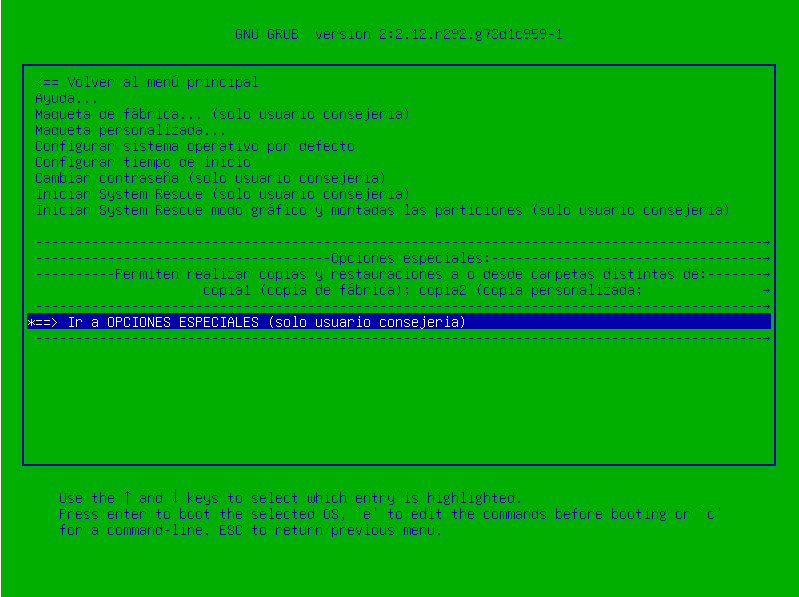
Esta entrada del menú avanzado lleva a otro menú que nos permite trabajar en una carpeta que puede ser distinta de copia1 y copia2 (maqueta de fabrica o personalizada) con backups o restauraciones de Windows y MAX, o volver a meú avanzado si desistimos:
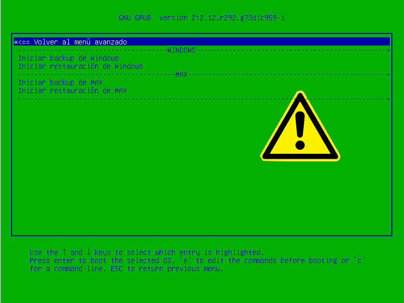
Una precaución que se debe tener a la hora de usar las opciones contenidas en el menú: Opciones especiales, es que el espiritu de SRP es contener en el espacio de almacenamiento del propio equipo de los archivos de copia de seguridad de los SO con que cuenta el equipo, y si bien se ha considerado que con los tamaños normales de los discos actuales son suficientes para manejar cierto número de copias de seguridad, no tenemos un espacio ilimitado por lo que el uso poco cuidadoso de la posibilidad que brindan las Opciones especiales llevara a crear un numero de copias de seguridad diferentes que llevara a agotar el espacio que se reservó para la partición SRPBACKUP.
Teniendo en cuenta estas precauciones, estas opciones nos permiten generar backups o restaurar tanto windows como MAX a o desde carpetas distintas de copia1 y copia2, eso sí, se ha obligado a que los nombres de las carpetas comiencen por la palabra copia, pudiendo añadir como coletilla cualquier combinación de letras y números a continuación.
Cuando entremos con cualquiera de las cuatro opciones del menu anterior, arrancará system rescue, nos mostrará en rojo el espacio disponible en la partición SRPBACKUP, nos listará numeradas las carpeta cuyo nombre comienza con la palabra copia y además dos opciones adicionales:
- 0: introducir manualmente el nombre de la carpeta ya que ninguna de las numeradas nos valdría
- x: Salir sin definir el nombre, que descarta el proceso y reinicia el equipo (imagen que sigue).
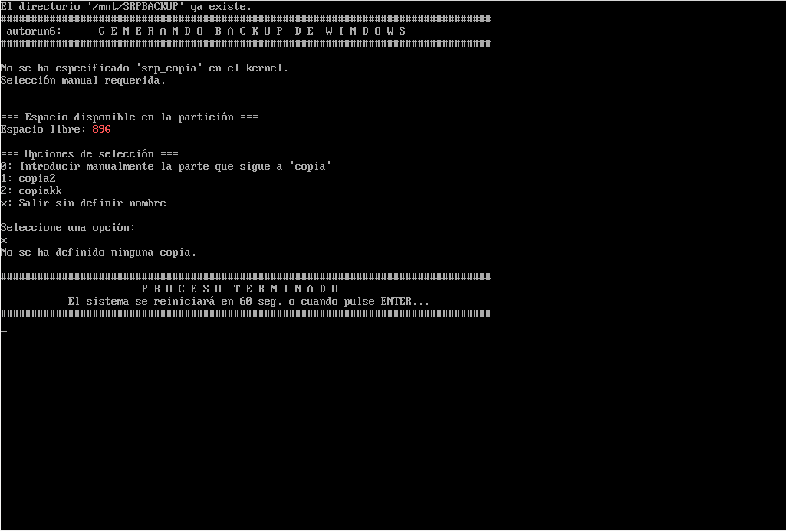
Elegir cualquiera de los otros numeros de las opciones (1 o 2 en la imagen) llevaría a realizar el proceso (en este caso backup de windows) sobre las carpetas:
- si se elige 1 sobre la carpeta copia2
- si se elige 2 sobre la carpeta copiakk
Si elegimos una de las opciones numeradas por ejemplo la opción 2 es decir trabajar sobre la carpeta copiakk, nos sacará una confirmación de la carpeta elegida en rojo y nos pedirá que confirmemos indicando si o no (s/n), todavía podemos descartar realizar el proceso poniendo 'n' (imagen que sigue), si ponemos 's' se llevaría a cabo:

Si ninguna de las carpetas listadas nos vale para el proceso, se seleccionaría la opción 0, para poder indicar con el teclado la coletilla a añadir a copia, si pulsamos esa opción:
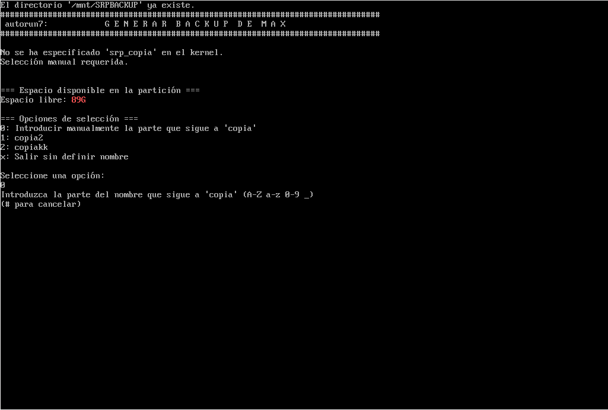
Nos aparece una linea que nos invita a teclear un nombre que conste del letras y/o numeros y si quisieramos cancelar el proceso en este momento basta con teclear el carácter # para acabar el proceso sin que se lleve a cabo, ver imagen siguiente:
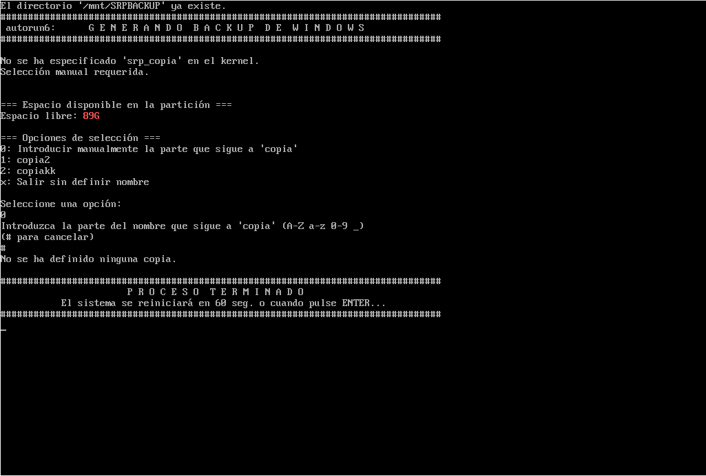
Si tecleamos un nombre válido por ejemplo "MAX", aparecerá una línea indicando que el proceso se llevará a cabo sobre la carpeta copiaMAX en rojo nos pedirá que confirmemos con sí o no (s/n):
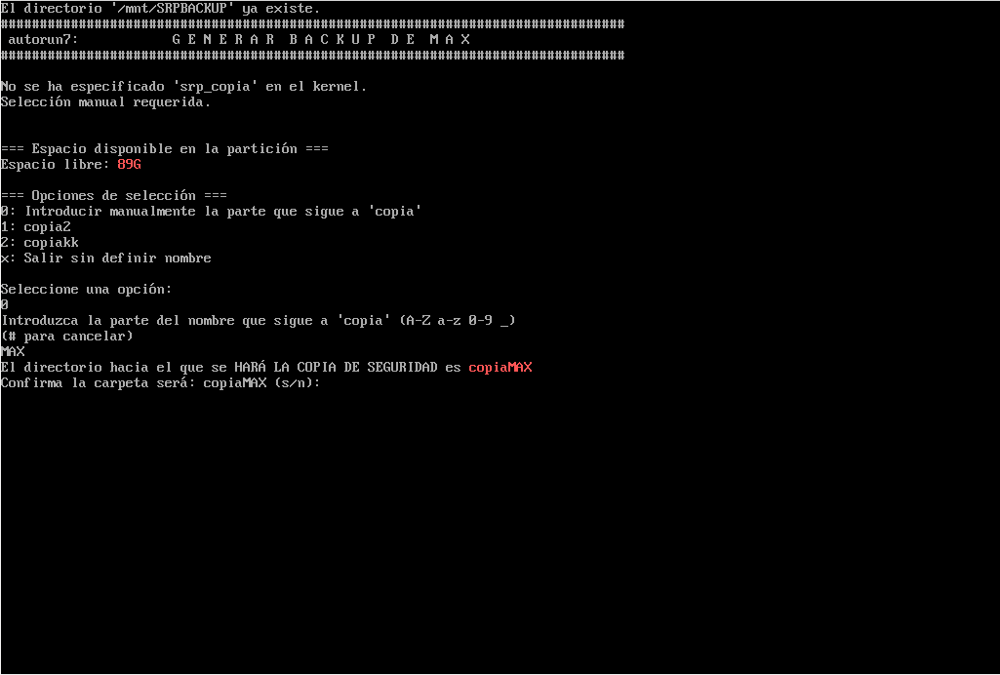
Todavía podemos desistir del proceso si pulsamos 'n' (imagen que sigue), si pulsamos 's' el proceso se llevará a cabo utilizando la carpeta 'copiaMAX'.
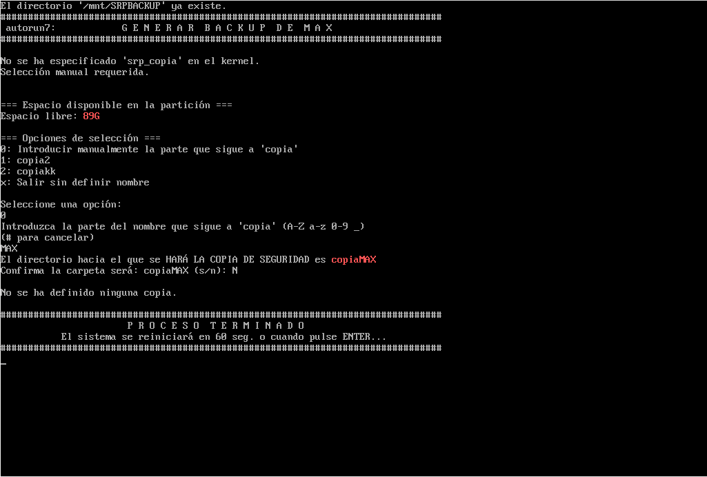
Como se ve con estas Opciones especiales, se brinda la posibilidad de gestionar de forma bastante segura copias diferentes de las dos estandar (fabrica y personalizada) de SRP, pero consideramos que no se debe abusar por las limitaciones que normalmente nos encontraremos en los equipos reales.